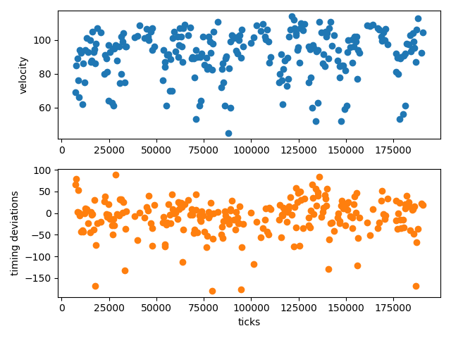

Music data extraction
The functions described in this page allow for easier extraction of data from music recordings (in the form of MIDI). A highlight of JuliaMusic is the timeseries function, which allows one to directly get gridded timeseries from arbitrary Notes structures.
Basic Data Extraction
MusicManipulations.firstnotes — Functionfirstnotes(notes, grid)Return the notes that first appear in each grid point, without quantizing them.
This function does not consider the notes modulo the quarter note! Different quarter notes have different grid points.
MusicManipulations.filterpitches — Functionfilterpitches(notes::Notes, filters) -> newnotesOnly keep the notes that have a pitch specified in filters (one or many pitches).
MusicManipulations.separatepitches — Functionseparatepitches(notes::Notes [, allowed])Get a dictionary "pitch"=>"notes of that pitch". Optionally only keep pitches that are contained in allowed.
MusicManipulations.combine — Functioncombine(note_container) -> notesCombine the given container (either Array{Notes} or Dict{Any, Notes}) into a single Notes instance. In the process, sort the notes by position in the final container.
MusicManipulations.relpos — Functionrelpos(notes::Notes, grid)Return the relative positions of the notes with respect to the current grid, i.e. all notes are brought within one quarter note.
Advanced Data Extraction
MusicManipulations.estimate_delay — Functionestimate_delay(notes, grid)Estimate the average temporal deviation of the given notes from the quarter note grid point. The notes are classified according to the grid and only notes in the first and last grid bins are used. Their position is subtracted from the nearby quarter note and the returned value is the average of this operation.
MusicManipulations.estimate_delay_recursive — Functionestimate_delay_recursive(notes, grid, m)Do the same as estimate_delay but for m times, while in each step shifting the notes by the previously found delay. This improves the accuracy of the algorithm, because the distribution of the quarter notes is estimated better and better each time. The function should typically converge after a couple of m.
The returned result is the estimated delay, in integer (ticks), as only integers can be used to actually shift the notes around.
Timeseries
MusicManipulations.timeseries — Functiontimeseries(notes::Notes, property::Symbol, f, grid; segmented = false) -> tvec, tsProduce a timeseries of the property of the given notes, by first quantizing on the given grid (to avoid actual quantization use the grid 0:1//notes.tpq:1). Return the time vector tvec in ticks and the produced timeseries ts.
After quantization, it is often the case that many notes are in the same bin of the grid. The function f denotes which value of the vector of the property of the notes to keep. Typical values are minimum, maximum, mean, etc. Notice that bins without any note in them obtain the value missing, regardless of the function f or the property.
If the property is :velocity, :pitch, or :duration the function behaves exactly as described. The property can also be :position. In this case, the timeseries ts contain the timing deviations of the notes with respect to the tvec vector (these numbers are known as microtiming deviations in the literature).
If 'segmented = true', the notes are segmented according to the grid in order to respect the information of their duration, see segment. Otherwise the notes are treated as point events with no duration (it makes no sense to choose :duration with segmented).
timeseries(notes::Notes, f, grid) -> tvec, tsIf property is not given, then f should take as input a Notes instance and output a numeric value. This is useful for example in cases where one would want the timeseries of the velocities of the notes of the highest pitch.
Here is an example:
using MusicManipulations, PyPlot, Statistics
midi = readMIDIFile(testmidi())
notes = getnotes(midi, 4)
swung_8s = [0, 2//3, 1]
t, vel = timeseries(notes, :velocity, mean, swung_8s)
notmiss = findall(!ismissing, vel)
fig, (ax1, ax2) = subplots(2,1)
ax1.scatter(t[notmiss], vel[notmiss])
ax1.set_ylabel("velocity")
t, mtd = timeseries(notes, :position, mean, swung_8s)
ax2.scatter(t[notmiss], mtd[notmiss], color = "C1")
ax2.set_ylabel("timing deviations")
ax2.set_xlabel("ticks")
An example code that obtains the velocity of the notes with highest pitch in each bin is this one:
notes = getnotes(midi, 4)
function f(notes)
m, i = findmax(pitches(notes))
notes[i].velocity
end
grid = 0:1//3:1
tvec2, ts2 = timeseries(notes, f, grid)Segmentation
MusicManipulations.segment — Functionsegment(notes, grid) → segmented_notesQuantize the positions and durations of notes and then segment them (i.e. cut them into pieces) according to the duration of a grid unit. This function only works with AbstractRange grids, i.e. equi-spaced grids like 0:1//3:1.